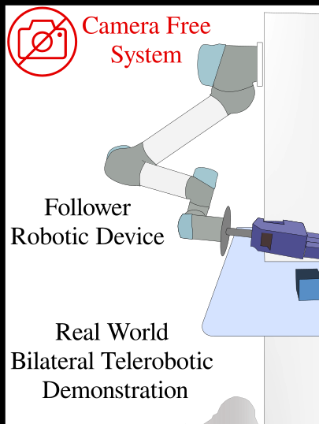
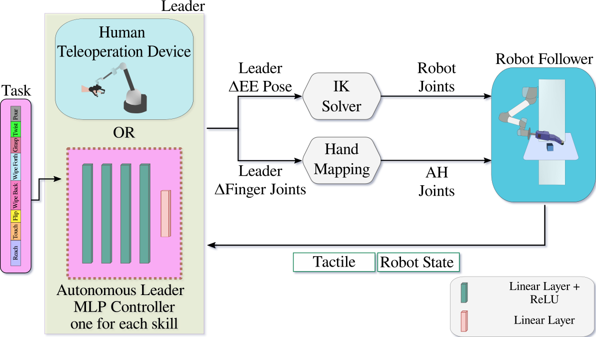
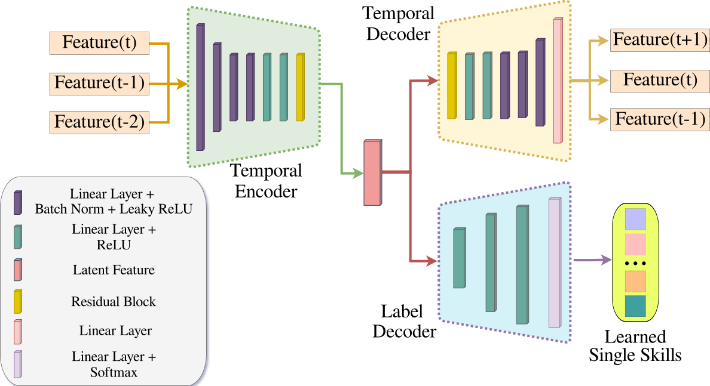

Overview of the proposed long-horizon task segmentation approach. Individual skills are segmented and classified at each temporal window of the demonstration. The demonstrations are collected via the teleoperation system developed in [15].

The leader agent generates motor control commands for the end effector pose and finger joints of the hand. The follower robot executes corresponding actions based on these commands. During teleoperation, the follower robot provides haptic feedback. When operating the robot autonomously, we control the robot using a distinct MLP trained on the proprioceptive and tactile data (i.e. haptic data) of each separate skill.

The architecture of our Neural Network for supervised representation learning incorporates an auto-regressive autoencoder and a label decoder. This network processes time-series feature data as input, with the encoder transforming these features into a latent space. The temporal decoder reconstructs the features along with their predictions, whereas the label decoder extracts labels from the latent vectors. The label decoder is jointly trained with the autoencoder generating latent features that improve the segmentation performance.